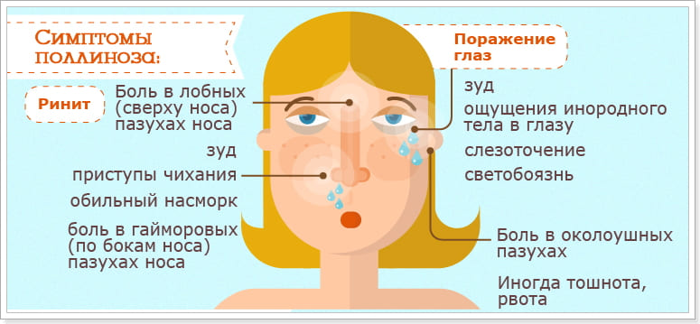
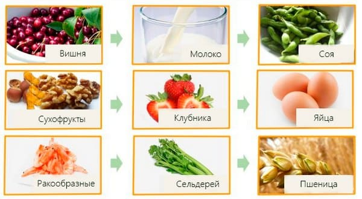

Пищевые аллергии – великие маскировщики. Я слышал, как люди приписывают пищевым аллергиям практически любую проблему из всех, какие только можно придумать. Иногда диагноз «пищевая аллергия» ставят необоснованно, лишая ребенка питательных и вкусных продуктов; в других случаях связанные с питанием проблемы игнорируются. Где-то между этими двумя крайностями лежит правда о пищевых аллергиях.
Слово «аллергия» происходит от двух греческих слов: allos (иной, другой) и ergon (действие). Таким образом, страдающий аллергией человек демонстрирует необычные симптомы или другую реакцию. Говоря медицинским языком, термин «аллергия» используется для обозначения реакции иммунной системы человека на аллерген.
Образцовое меню для ребенка от года до двух
В нижеследующем списке суммированы компоненты сбалансированного меню на день для среднего восемнадцатимесячного ребенка с весом примерно 12 кг. Выбирайте из пяти основных пищевых групп, чтобы обеспечить своему ребенку сбалансированное питание. (Одна порция фруктов, овощей и злаков равняется примерно одной четверти или половине стакана. Вес порции мяса и бобовых составляет 60 г, размером примерно с кулачок ребенка.)
• 1000–1300 калорий в день
• три стакана цельного молока или равноценных молочных продуктов (или грудное вскармливание как минимум три-четыре раза в день)
• три-четыре порции злаков
• две-три порции овощей
• две-три порции фруктов
• одна порция бобовых
• одна порция мяса, птицы или рыбы
• 100–120 г полезных перекусов
Пищевую непереносимость зачастую диагностировать гораздо труднее, чем пищевую аллергию. Термин «непереносимость» используется, когда продукт воздействует на организм не так, как надо, а значит, не вызывает иммунного ответа, как например непереносимость лактозы или гиперактивность, вызываемая сахарами и пищевыми добавками. Некоторые виды непереносимости пищевых веществ, например непереносимость лактозы (вызываемая отсутствием в кишечнике одного фермента и проявляющаяся в форме болей в животе и диареи после потребления молочных продуктов), диагностируются достаточно объективно. Другие виды непереносимости – сахаров и пищевых добавок, к примеру, – диагностируются более субъективно, и диагноз трудно подтвердить. Любому продукту можно вменять в вину непереносимость.
Третий термин – гиперчувствительность, или повышенная чувствительность, – означает то же, что и аллергия. Все три термина (аллергия, непереносимость и повышенная чувствительность) можно свести к одному термину: «чувствительность к пищевым продуктам», которая означает, что определенный продукт заставляет ребенка чувствовать себя и действовать не так, как положено, или же заставляет функционировать не так, как положено, определенные органы.
Каждый продукт питания, особенно животного происхождения, содержит белки, называемые антигенами (аллергены, если у нас на них аллергия). Эти подозрительные белки попадают в кровь и воспринимаются организмом как инородные вещества, как чужаки. Иммунная система организма распознает эти инородные тела и мобилизует свои собственные белковые войска, так называемые антитела. Начинается борьба. Когда антигены и антитела сходятся для схватки, это сказывается на определенных частях организма – органах-мишенях, – обычно на слизистой оболочке дыхательных путей, кишечника и на коже. Реакции, напоминающие маленькие взрывы, высвобождают химические вещества, вызывающие симптомы аллергии. Наиболее хорошо изученным из этих химических веществ является гистамин (отсюда лекарства от аллергии, называемые антигистаминными препаратами), который приводит к нарушениям в тканях, вызывая выделение жидкости кровеносными сосудами (насморк и слезотечение из отекших глаз), а также появление сыпи. Иногда возникают спазмы мышц дыхательных путей (хрипы).
Почему у одних детей аллергия есть, а у других – нет, не вполне понятно. Скорее всего, это в генах.
Признаки и симптомы пищевых аллергий настолько различны, насколько различны отпечатки пальцев детей. Самые очевидные признаки появляются в трех местах: дыхательные пути, кожа и кишечник. Эти признаки встречаются наиболее часто и легко выявляются. Другие – менее выраженные, и продукт-виновник вычислить сложнее.
Обычные признаки пищевых аллергий
Дыхательные пути
- течет из носа чихание
- хрипы, насморк
- слезящиеся глаза
- бронхит
- повторные воспаления уха
- непрекращающийся кашель
- застой жидкости
- шумы за грудиной

Кожа
красная, напоминающая наждак сыпь на лице
крапивница
опухшие кисти рук и ступни
сухая, шелушащаяся, зудящая кожа (больше на лице)
темные круги под глазами, похожие на ожоги
припухшие веки
вздутие губ, болезненность и растрескивание языка
Кишечник
диарея со слизью, запор
вздутие живота, газы, чрезмерное срыгивание
рвота
кишечное кровотечение
плохая прибавка в весе
опрелости вокруг ануса
неприятные ощущения в области живота
Эти симптомы затрагивают центральную нервную систему или головной мозг:
• капризность
• тревожность
• ночные пробуждения
• плач
• головные боли
• боль в мышцах и суставах
• раздражительность
• гиперактивность
Признаки борьбы различаются по времени появления: одни возникают сразу же или в течение минут; другие – через несколько часов или дней. Малыш может съесть на кухне яйцо и покрыться крапивницей к тому моменту, как он дотопает до гостиной, или же у него может возникнуть сыпь спустя несколько дней. Различаются пищевые аллергии и по степени тяжести. Вы можете стремглав нестись со своим заходящимся хрипами ребенком к ближайшему отделению «Скорой помощи» через пару минут после того, как он съел одну ягоду клубники, или же у него может возникнуть лишь неприятное кожное раздражение, которому требуется просто лечение временем и отпускаемым без рецепта антигистаминным препаратом.
Пищевые аллергии, в отличие от отпечатков пальцев, меняются. Большинство ослабевает по мере того, как ребенок подрастает; некоторые случаи иногда отягчаются; многие исчезают полностью. У некоторых детей наблюдается переход с одной пищевой аллергии на другую. У них исчезает аллергия на томаты, и они могут снова без опасений тянуться к бутылке кетчупа, но при этом может появиться аллергия на горчицу. Иногда аллергия возникает всякий раз, как ребенок съест определенный продукт; другие имеют цикличный характер, связанный с количеством и частотой потребления продукта. Пищевые аллергии также имеют порог, то есть каждый ребенок имеет определенный уровень чувствительности к данному продукту, и некоторые аллергии связаны с дозой. К примеру, у некоторых детей могут появляться хрипы или крапивница, если они съедят всего лишь на кончике чайной ложки арахисового масла. У других не появляется заметных признаков аллергии на арахисовое масло, если ограничивать потребление этого продукта одним сэндвичем в неделю.
Если у вашего ребенка имеются признаки чувствительности к пищевым продуктам, вот рекомендации, которые помогут вам установить виновника (виновников).
Записывайте все, что ваш ребенок ест в течение четырех дней, включая и то, что вы даете ему между приемами пищи.
Из списка продуктов, которые ваш ребенок ест чаще всего, выберите самый подозрительный аллерген, возможно, один из «большой девятки»: молочные продукты, пшеница, яичный белок, арахисовое масло, кукуруза, цитрусовые, соя, морепродукты или пищевые добавки. Начните применять метод исключения, когда другие факторы не затрудняют вам выявление пищевых аллергий. Не следует, к примеру, делать это во время праздников, дней рождения; подождите также, пока кончится сезон пыльцы или домашний ремонт. Самым частым виновником являются молочные продукты, поэтому вы можете начать с них, если у вас нет иных подозрений. Это не самый легкий для исключения продукт, поскольку он имеет столько разных восхитительных форм (молоко, йогурт, сыр, сметана, мороженое). Но белок коровьего молока действительно является ведущим аллергеном. Исключите этот продукт на две недели (на три, если не торопитесь) и фиксируйте в таблице свои наблюдения (см. «Таблицу пищевых аллергий».). Если не увидите никаких изменений, переходите к следующему подозрительному аллергену, продолжая, пока не кончится список.
Выследив виновника, чтобы убедиться в том, что исчезновение симптомов не вызвано простым совпадением, снова введите в рацион ребенка подозрительный продукт и посмотрите, появятся ли настораживающие признаки и симптомы. Помните, аллергическая реакция не означает, что аллергия будет сопровождать ребенка всю жизнь. Большинство пищевых аллергий проходит с возрастом. Повторно вводя продукты, делайте это постепенно, в малых количествах и увеличивайте количество каждые три-четыре дня, чтобы посмотреть, появятся ли признаки и симптомы.
Самые аллергенные и наименее аллергенные продукты
Самые аллергенные продукты
- ягоды
- гречка
- шоколад
- корица
- цитрусовые
- кокос
- кукуруза
- молочные
- продукты
- белок яйца
- горчица
- орехи
- горох
- арахисовое
- масло
- свинина
- моллюски и ракообразные
- соя
- сахар
- томаты
- пшеница
- дрожжи
Наименее аллергенные продукты
- яблоки
- абрикосы
- спаржа
- авокадо
- перловка
- свекла
- брокколи
- морковь
- цветная капуста
- курица
- клюква
- финики
- виноград
- мед
- баранина
- салат-латук
- манго
- овес
- папайя
- персики
- груши
- пои
- (корень таро)
- изюм
- рис
- рожь
- масло сафлора
- лосось
- тыквы и кабачки
- подсолнечное масло
- сладкий картофель (батат)
- индейка
- телятина
Читайте этикетки
Потенциально аллергенные продукты могут быть указаны на упаковке товаров под другими названиями. Наиболее часто – под следующими:
• пшеничная мука: крупчатка, манная крупа
• яичный белок: альбумин
• молочные продукты: сыворотка, казеин, натрия казеинат
Внимательно читая этикетки, вы сможете узнать, что вы едите:
• сухие смеси какао (какао быстрого приготовления), пюре, подливы и некоторые соусы содержат молоко
• лапша и макароны содержат пшеницу и иногда яйца
• консервированные супы могут содержать пшеницу и наполнители из молочных продуктов
• большинство видов хлеба содержит молочные продукты
• в маргарин обычно входит молочная сыворотка
• сосиски, холодная нарезка и десерты «без молочных продуктов» содержат натрия казеинат
Для тех, кто употребляет кошерные продукты, слово «парве» на этикетке означает, что данный продукт не содержит молока и мяса.
У некоторых детей аллергия на продукт возникает лишь тогда, когда они чрезмерно налегают на этот продукт или едят его каждый день. Дети от года до двух склонны питаться одним продуктом в течение целой недели, не желая принимать ничего другого, после чего они не прикасаются к этому продукту месяцами. Если придерживаться ротационных диет – выдерживать между потреблением вызывающих подозрения продуктов интервал в четыре дня, – это может облегчить ситуацию.
Более быстрый способ снятия симптомов может быть предпочтительнее, если у вашего ребенка очень сильная аллергия (чихание, крапивница, частая простуда, воспаления уха, плохая прибавка веса, частые ночные пробуждения, боли в животе). Исключите все девять вышеуказанных продуктов на одну неделю или пока не заметите изменения (может быть, даже на три недели). Затем заново вводите по одному продукту каждую неделю, чтобы посмотреть, появятся ли снова симптомы. Если появятся, этот продукт попадает в список «нельзя ни в коем случае» как минимум на четыре месяца, после чего можно попробовать постепенно снова вводить его в небольших количествах.
Таблица пищевых аллергий
Если вы будете вести запись, это поможет вам установить, имеется ли связь между аллергическими симптомами вашего ребенка и продуктами в его ежедневном рационе. Вот образец таблицы:
Пытаясь установить источник неприятностей, начните с продуктов, состоящих из одного ингредиента, с молока, например. Хлеб, лапша и мясные изделия содержат множество потенциальных аллергенов, что делает исключение одного аллергена сложным. В колонке «Возможно аллергенный продукт» напишите первый продукт, который будете исключать.
Фокусируйтесь на самых объективных признаках – сыпь, изменения в работе кишечника (диарея или запор), проблемы с дыханием. Отмечайте в таблице самые тревожные признаки и симптомы. Если вы наблюдательный человек, можете включить некоторые особенности поведения, например раздражительность и ночные пробуждения.
В колонке «Результаты» отмечайте, какие изменения произошли с этими признаками и симптомами после того, как вы исключили данный продукт. Будьте настолько объективны, насколько сможете: помните, каждая новая попытка может показаться вам неожиданным просветом, поскольку вы ожидаете увидеть результат, возможно, отчасти из-за всех трудностей, которые вам приходится преодолевать. В последней колонке записывайте дополнительные наблюдения, а также все, что хотите запомнить.
Ведите запись всех продуктов, съеденных в течение дня, чтобы вы могли вспомнить, что когда было съедено, в случае если симптомы изменятся.
«Но что же тогда есть моему ребенку?» – спросите вы. В этот период ваш ребенок может есть свежие овощи (кроме кукурузы, помидоров и гороха), свежие фрукты (кроме ягод и цитрусовых), авокадо, рис, перловку, пшено, птицу и баранину. Имеет смысл на этот период воздержаться также от балластных продуктов (например, сладостей и напитанных жиром пакетированных готовых завтраков), от содержащих нитриты продуктов и других аллергенных продуктов. Это будет прекрасной возможностью перевести на более здоровую программу питания всю семью.
Марта, Уильям, Роберт, Джеймс Сирс"Ваш малыш от рождения до двух лет"